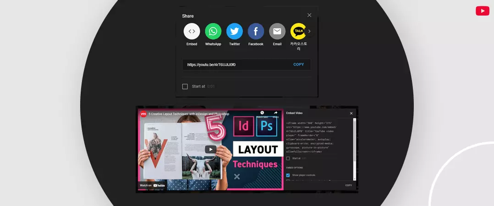
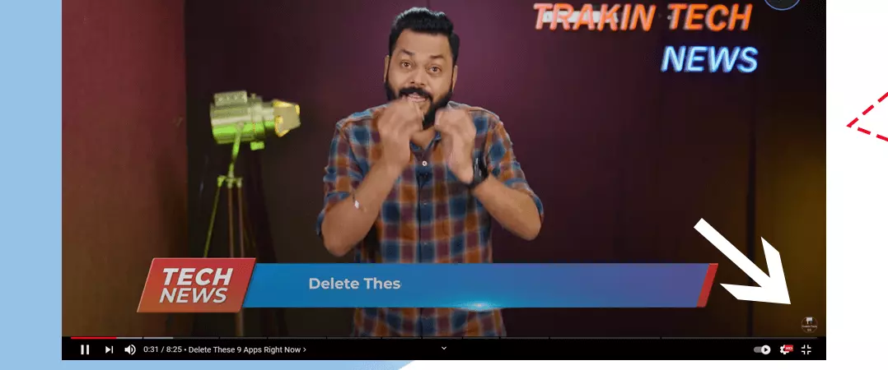
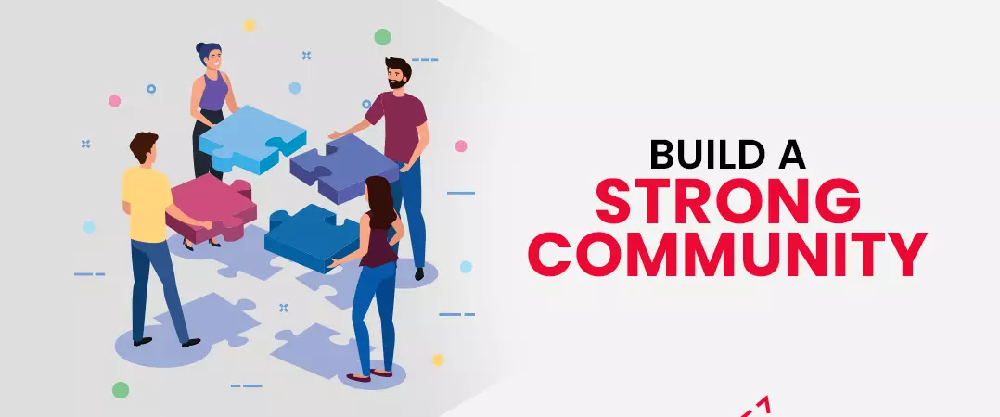
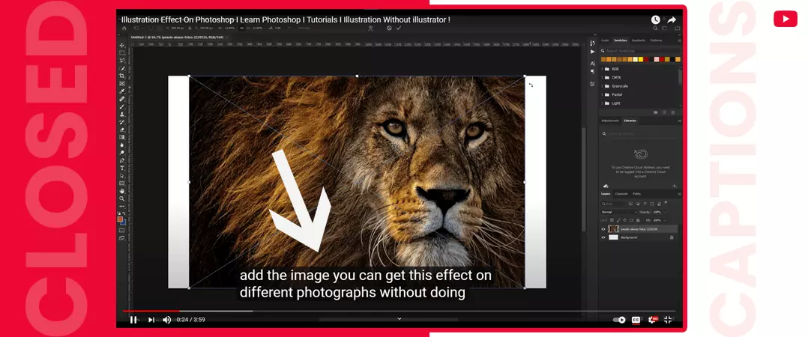
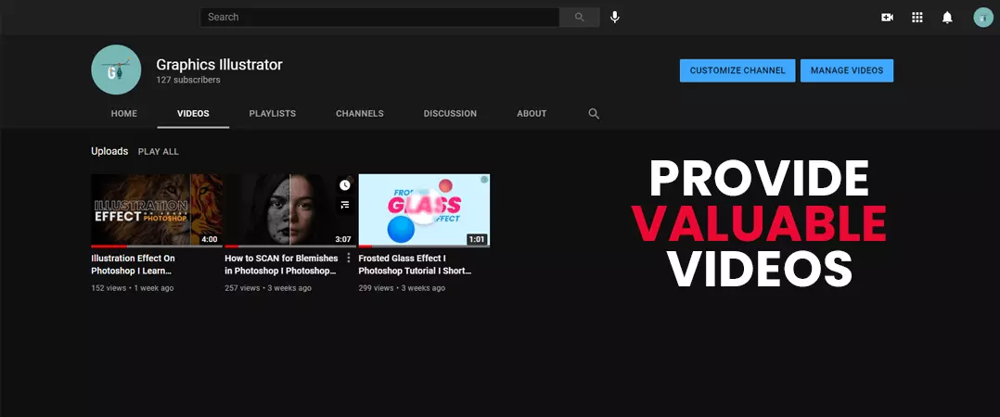
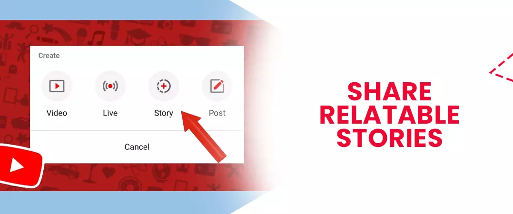
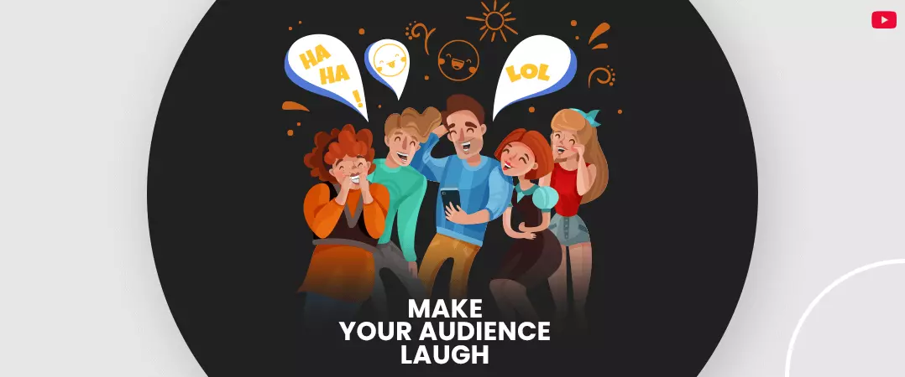
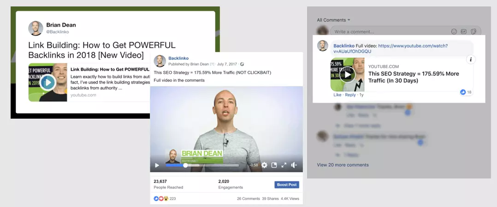
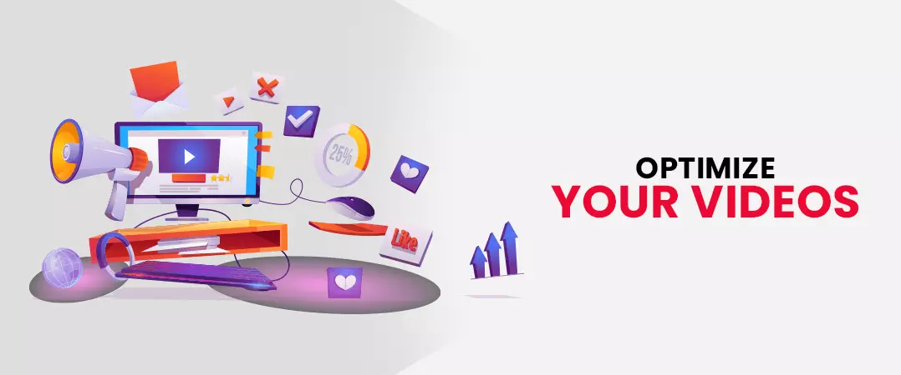
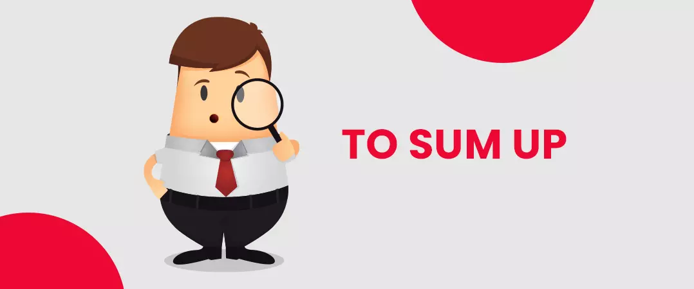

YouTube has held the spot as the second largest search engine on the planet for the better half of the last decade. The popular video-sharing platform receives 2 billion-plus user visits every month - the number is expected to hit 3 billion in 2025.
Due to its growing popularity, YouTube has launched its localized variants in more than 100 countries, and you can view the content in 80 different languages.
I think at this point; we can safely say that people like this platform a lot. And where there are people, there are also brands looking to promote their offerings.
With the hopes of snatching their competitors' prey, many individuals, creators and enterprises buy views by throwing money at shady websites. But what slips their minds is that when this mistake backfires, it can do a lot of damage to their channel.
If we know anything, it is not easy to make a fool out of the YouTube algorithm. And we will highlight 'why' in the following steps:
- The algorithm is evolving rapidly and is at a point where it can easily detect 'bots'.
- Views take the back seat; it is the user engagement that runs the show now.
- Bots and other computerized programs can be expensive.
Although, it is a different story when you buy YouTube Subscribers and views from legit suppliers.
However, if you are new to the game and want to know how to increase YouTube views by yourself, - then my friend, you have arrived at your final destination.
This article covers the well-known and lesser-known methods that you can utilize to get more views on YouTube for free.
Without wasting any more time, let's dive in.
Contents
- 1. Request YouTube Video Embeds
- 2. Insert Watermark to Your Videos
- 3. Build a Strong Community
- 4. Add Closed Captions to Your Video
- 5. Produce Valuable Videos
- 6. Share Relatable Stories to Inspire Your Audience
- 7. Make Your Audience Laugh
- 8. Promote Videos on Other Social Media Channels to Increase Views
- 9. Optimize Your Videos
- 10. To Sum Up
Request YouTube Video Embeds

You could have one of the best contents on the platform. But, if you want to get more views on YouTube for free and improve organic reach, you have to get more people to embed your videos on their site.
Step 1: Make a List of Relevant Sites
It would help if you got this step right before you do anything else. You need to create a spreadsheet containing all site URLs in advance - with a list on hand; you can get in touch with blog admins no sooner than you upload your video to your channel.
Step 2: Communicate with Them
Don't expect something from someone before you offer something to do in return. It would be best if you were willing to spend time with other creators and form a personal bond with them. Promise them that you will do everything possible to help find more audience for their content.
Step 3: Email Creators Pitching Your Proposal
When you send an email, do not be uptight. You can afford to adopt a casual approach.
- Start with a friendly "Hello", followed by the concerned blogger's name.
- Next comes the 'body of your email - this is where you place your embed request. Make sure not to make it too long. It will help if you include the link to your video.
- End the email with 'Best Regards', succeeded by your name.
How many links can you expect? - After 100 email pitches, you can hope to get five links at most.
I know the number is not significant, considering the effort you put into crafting all those emails. But do not feel disheartened yet. Here quality is more important than quantity. You will see visible results when you start to get more views on YouTube from highly authoritative websites.
Insert Watermark to Your Videos

Did you know about 'watermark' - a feature that will bring you more subscribers and get more views on YouTube - if you haven't heard about it before, now you do.
What is a watermark? - it is nothing but an image that will show up on your videos - creators and brands use their official logos for branding purposes. What's interesting about this is that when a user moves their mouse over the watermark, a popup appears, prompting them to subscribe to the channel.
As a minor setback, you have no control over your watermark. Once uploaded, it will either appear on all videos or none of them; you cannot be choosy.
It would also be helpful to know that your channel has to be verified to be eligible for the watermark.
How to add a watermark?
- Sign in to your 'creator studio'.
- On the left and column of the screen, press 'Channel' followed by 'Branding'.
- Click 'Add a watermark'.
- Now, select an image of your choice.
Pro tip: Please make sure that your watermark is transparent and square. Also, your image should be above 50 X 50 pixels.
Get the perfect video lighting setup
Build a Strong Community

Do not forget apart from being the second largest search engine on the planet; YT also holds the second spot for the most visited social media platform. If you don't start treating YouTube as such, you will find it challenging to Increase views on YouTube.
We are trying to say that you need to interact with your audience on this platform just like you would on any other social platform.
How, you may ask? - you can start by replying to your viewers' questions. A user will post a comment hoping that it will be met with a befitting response from you - be sure to give it to them.
Replying to comments won't eat into much of your time - this act will also nurture a feeling of fellowship among your audience. Also, you should consider subscribing to other channels within your niche and drop comments on their videos - it's a give and takes relationship.
Also read: How to moderate comments on YouTube
Audiences like to associate with creators that are actively engaging with them. By consistent interactions, you are also effectively branding yourself within your niche.
Another sure-fire way to build a loyal community and get more views on YouTube includes involving your audience directly in some activity. You could hold contests and giveaways and ask participants to share your videos as a criterion for entry.
Add Closed Captions to Your Video

When you create high-resolution videos with clear sound quality, you attract users' attention across the platform. However, you should know that you also have an audience base that wants to consume your content but is restricted by language or disability barriers. What can you do to help them? - well, as it turns out, YouTube provides closed captions that allow you to insert transcripts as video subtitles. Your viewers can toggle between subtitles at their discretion.
When you make it big and get traffic from across the globe - transcriptions can come in handy. You can translate your scripts into multiple languages, thus making it easier for your audience to consume content in the language of their choosing.
How can you create an upload translation file to YouTube?
The process is not at all confusing. You have to create an SRT file that contains your text, together with the time frame. The time specifies when your text will show up in your video.
When you are done uploading, make sure to check if the text pops up at the right time. Once finished, you would have successfully placed a close caption in your video.
Produce Valuable Videos

The popularity of YouTube is driven by one single aspect: they aim to give their viewers the best results for their queries. YT believes that if the audience leaves the platform satisfied, they won't hesitate to return.
Now, what is your take from this? - when you produce your videos, you have to make sure that you address your audience's needs and enjoyably present your content.
Also Read: YouTube Equipment for Beginners
Well, this looks good on paper, but from a practical standpoint - can you get it done?
To answer that question, let us look at some examples that can help you get your audience interested in your content.
Share Relatable Stories to Inspire Your Audience

Take the initiative to create content with stories that inspire your watcher. For example, take a look at Oklahoma's based tourism department 'RoadTripOk', which encourages travellers to commute safely from their weekly video series.
Make Your Audience Laugh

The channel 'Match Made in Hell' has incorporated humour in its videos by pairing 'Satan' with 2020. This move brought in a whopping 14 million views on the first day. The numbers received were 40% higher than any of the company's previous marketing campaigns.
Provide Valuable Information to Your Audience
Some additional knowledge has never harmed anyone - your audience will appreciate your effort.
For instance, domain provider 'GoDaddy' addressed the problems faced by small business owners by showcasing documentaries on entrepreneurs. The videos focused on obstacles that these businessmen faced and how they overcame them against all odds.
As a result, GoDaddy witnessed a 300% increase in subscribers and a 250% increase in watch time.
Promote Videos on Other Social Media Channels to Increase Views

I am sure you have your brand presence on other social media networks like Facebook, Instagram, Quora etc. You may also be aware that you have a different audience base eager to watch your videos, but lack of exposure has left them alienated from your channel.
How can you generate awareness among the masses? – you can start by producing teaser content specific to each of your social media handles.
Remember, you are not restricted to social platforms. You are free to expand your horizon and embed your videos on related blog posts and web pages.
We are not oblivious that when you are an individual creator, managing content on several platforms can prove to be a challenge. But you don't have to worry because you have scheduling tools like 'Buffer' at your disposal – these software’s can make managing your content much easier.
Do not shy away from dabbing into the email marketing arena. With proper utilization, your email list can be a valuable source to get you more views on YouTube.
Optimize Your Videos

YouTube algorithm provides you with many ways to optimize your channel and videos for search. Some of them are your video title, description, and tags.
Once you’ve strong-minded your video lighting setup, you can add more apparatuses to achieve the envisioned effects. For example, some YouTubers use a “soft box”, which is an accessory for a light fixture that diffuses the light and makes the source larger.
Title
YouTube is a search engine, depends on keywords to label and categorize your content. Hence, you have to make sure that your video title is optimized for the same.
Since your title provides a glimpse of what a searcher can expect, placing targeted keywords in your title helps YT crawlers rank your video and increases views on YouTube by convincing users to click and watch your content.
Description
Not just your title, your Meta description also has its role to play when ranking your content in search results.
We urge you not to be hasty - spend quality time creating a description that will make it easier for the algorithm to promote your YouTube videos.
Only a few lines of your description will be visible to your visitors. To view the rest, they have to click the 'show more' link. Therefore, you should place any crucial information your audience needs at the start of your description. You are free to include links to your external website or e-commerce store.
Ensure that your primary keyword is sprinkled all across your description - one should be placed within the first 25 characters.
Tags
When we look at all the available metadata on YouTube, video tagstake the last spot in the priority ranking.
Many consider tags as the least important, especially when compared with titles or descriptions. However, if you wish to improve your video ranking and get more views on YouTube, you cannot afford to skip tagging your content with relevant keywords.
Keep your tags specific to your videos. For example, if your content is about social media marketing tips - then you should use tags like social media optimization, how to start social media marketing, social media tutorials etc.
YouTube has not set any limits to how many tags you are allowed to use in a video, but it will be helpful to limit them to 5 or 10.
To Sum Up

You cannot rush good things; remember to exercise patience. It will be some time before you get more views on YouTube. Your ability to generate more video views can also be hindered by the algorithm that is constantly evolving.
YT can change its criteria required for more views to get quality content for its users.
It will help if you direct your efforts into nurturing a loyal community that will engage with your videos and contribute to a significant portion of views you received on your channel.
As we end our article, we hope you found value in the time you spent with us. Please, do not hesitate check out more content on our website.
Feel free to share